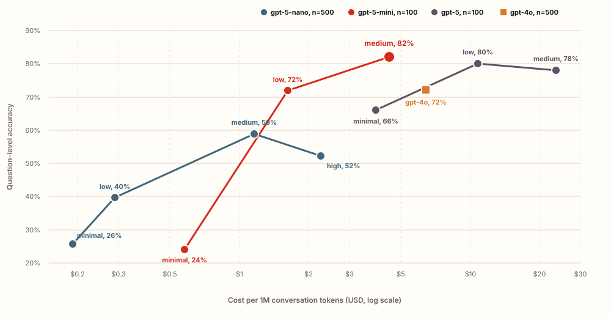

Agent memory · LongMemEval · June–July 2026
Benchmarking agent memory on LongMemEval
We compared raw conversation retrieval, extracted memories, and a combination of the two. In our 500-question run, Remis + Instruct reached 86.1% task-averaged accuracy.
About the results
How to read the comparisons
The Redis Agent Memory run. The main result covers all 500 questions in the LongMemEval small split, using gpt-4o for answers and judging.
Other systems. Some were evaluated by us using our benchmark code; others are published figures shown for context. Their benchmark split or answer model may differ, and the chart notes those cases.
Cost estimates. Dollar estimates cover measured LLM token usage at list prices. They exclude infrastructure, hosting, and server-side ingestion costs that were not available to us.
Background
Why use external memory
Including every prior conversation in each prompt becomes slower and more expensive as the history grows. An external memory system stores each session, then retrieves a smaller amount of relevant context for a new question.
LongMemEval tests whether that retrieved context is sufficient. Its small split contains 500 questions over multi-session chat histories, covering user and assistant facts, preferences, knowledge updates, evidence spread across sessions, and temporal reasoning.
Redis Agent Memory
Three memory strategies
Instruct
LLM-extracted memory
An extractor reads each session and the current memory store, then creates, updates, or deletes individual facts. This can consolidate changes across sessions, but details omitted during extraction are unavailable later.
Remis
Semantic retrieval from raw conversations
We call this strategy Remis. It splits sessions at topic shifts and indexes the resulting chunks with dense and BM25 signals. Neighboring chunks expand the retrieved context. This preserves exact details, but it can also return more irrelevant text.
Remis + Instruct
Raw excerpts + extracted facts
Both stores are queried, then one answer call receives two labeled sections: conversation excerpts and extracted memories. The answer model can draw from either source when responding.
Results
Results for the three Redis Agent Memory strategies
The primary metric gives each of the six task types equal weight, rather than giving more weight to categories that contain more questions.
Redis Agent Memory strategy accuracy
Task-averaged accuracy on LongMemEval small (%)
Remis + Instruct had the highest result shown, at 86.1%. The 83.4% Remis value is included for comparison, but we could not match it to a retained raw result file.
Remis + Instruct in context
Task-averaged accuracy on LongMemEval small (%)
Remis + Instruct reached 86.1%, the highest result among the systems run in our evaluation code. Published figures above it use different setups and are not direct comparisons.
* OMEGA uses GPT-4.1 generation and grading with benchmark-selected prompts; Chronos adds query guidance, reranking, and iterative retrieval. Neither is directly comparable to our run.
Interpretation
Why Remis + Instruct may have helped
Extracted memories can consolidate information spread across sessions and represent changes over time. Raw chunks preserve quotes, names, dates, and numbers that an extractor may omit. Remis + Instruct gives the answer model access to both forms of context.
We did not test that explanation directly. Remis + Instruct also received context from two retrieval paths, and we did not run an ablation with equal retrieved-token budgets. The evaluation therefore cannot separate complementary representations from the benefit of having more evidence available. The trade-off may also change with different histories, models, prompts, or latency requirements.
Chronos reports a similar raw-plus-structured design, but with additional query guidance, reranking, and iterative retrieval.
Related work
Evidence for hybrid retrieval and preserving raw context
A July 2026 preprint, Beyond Memory Leaderboards, evaluated eight memory and retrieval systems over full scientific papers. The authors found that retrieval modality and raw-text preservation materially affected results. On one of their two corpora, adding BM25 to dense retrieval was the largest measured intervention for the systems where they could test it.
These findings provide independent evidence for core choices in our approach. Remis combines dense and BM25 retrieval over raw conversation chunks, and the Remis + Instruct keeps that raw evidence available alongside extracted memories. The paper also found that matching retrieval budgets could change system rankings, reinforcing our decision to qualify comparisons made under different protocols. Its task is scientific-paper retrieval rather than conversational memory, so the connection is at the level of design and evaluation principles.
Extraction model comparison
Results from changing the extraction model
Instruct uses an LLM to turn each session into memories. In a separate experiment, we kept the store, answer model, and judge fixed while changing the extraction model and its reasoning effort.
Extraction accuracy and normalized cost
Question-level accuracy on LongMemEval small
Each line follows one extraction model as reasoning effort changes; farther left is cheaper and higher is more accurate. GPT-5-mini at medium effort had the highest question-level score in these runs, while higher effort did not consistently improve accuracy.

gpt-5-mini, medium reasoning. This run reached 82% on the 100-example subset, the highest observed question-level score in this set of runs. Estimated cost was $4.45 per million conversation tokens.
gpt-5-mini, low reasoning. This run reached 72.0% on 100 examples. The gpt-4o run reached 72.1% on 500 examples at an estimated $6.42 per million conversation tokens.
Accuracy did not rise at every higher effort setting. Nano scored lower at high effort than at medium. GPT-5 changed little between low and medium effort while cost and latency increased.
The 82% figure uses question-level accuracy. The 86.1% figure at the top is a task-averaged result for Remis + Instruct. They use different metrics and are not directly comparable.
Cost and latency
Estimated LLM cost and measured latency
For the cost comparison, one session includes ingestion plus 5.13 queries, the average number of user turns in this benchmark split.
Task-averaged accuracy and estimated LLM cost
Total memory cost per session (USD, log scale)
Each point combines task-averaged accuracy with estimated LLM spend per session. Remis + Instruct reached 86.1% at an estimated $0.0703 per session. Hidden server-side costs limit direct comparisons across systems.
Reproduced results
Our measurements did not always match published figures
The differences went in both directions. They do not by themselves show that a published result is wrong: products, prompts, defaults, and answer models can differ. They show how much the evaluation setup can affect the measured result.
Published figure vs. our measurement
LongMemEval accuracy (%)
Each pair compares a published figure with what we measured. The differences went in both directions, showing that changes in the evaluation setup can change the result.
Limits
Limits of this evaluation
-
01
One benchmark shape. LongMemEval small has a fixed question mix and roughly 24 sessions per example on average. Production histories can be longer, noisier, and more dynamic.
-
02
One answer backbone for most reproduced runs. The findings may shift with newer or smaller answer and extraction models.
-
03
An LLM judge. The official binary judge improves consistency, but it is not error-free and does not measure answer style, calibration, or user satisfaction.
Summary
Raw excerpts and extracted memories worked better together in this run
Remis + Instruct had the highest task-averaged accuracy of the three Redis Agent Memory approaches we tested. The extraction-model runs also varied substantially in accuracy, cost, and latency. Both results are specific to these benchmark settings and should be tested again on the workload where the memory system will be used.